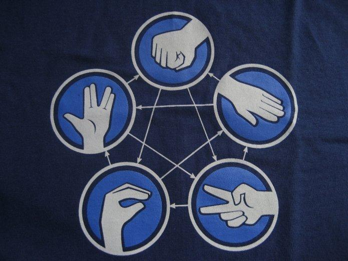
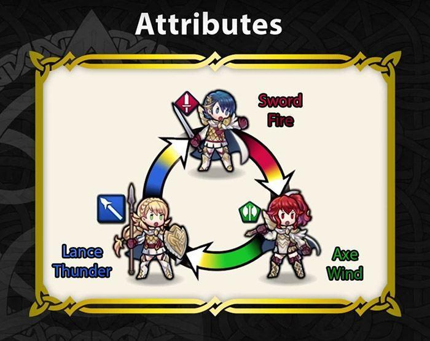

关键词：价值/损失函数 | 决策 | 偏好系统 | 最优解
纠结、选择与价值函数
纠结是什么？让我们回归字面：一个纠缠打结的复杂线团，拆也不是、剪也不是，胡乱尝试之下甚至缠得更紧。
很不幸的是，我们面对问题时几乎总是会进入这样一种状态。原因有两个，比如问题本身就很复杂，我们很难找到可行解。但或许更多的情况是，诸多可行解已摆在面前，我们要从中选择出最优解。纠结的其实是如何选择。
先让我们来看一个令人纠结的经典问题：有轨电车难题
假设你看到一辆刹车坏了的有轨电车，即将撞上前方轨道上的5个人，而旁边的备用轨道上只有1个人，如果你什么都不做，5个人会被撞死。你手边有一个按钮，按下按钮，车会驶入备用轨道，只撞死1个人。你会选择怎样做？
纠结了吗？让我们先来分析这个问题中的最明显的关键条件：一边是5个人，一边是1个人。这时，仅从数字上来看，当然选择5个人，没问题吧？
让我们补充点佐料，那么一大波问题来了:
- 那5个人都是你不认识的人，那1个人则是你的亲人
- 1000000个你不认识的人，1个你的亲人
- 一边5人一边1人，你都不认识，但是你知道如果按了按钮，你相当于主动杀掉1个无辜的人，会一辈子良心不安，反之如果什么都不做，至少你没有主动选择杀死谁，虽然也很难受但似乎可以承受
- （还可以继续细思恐极下去...）
纠结了吗？
为什么纠结呢？因为我们显然不如我们自己通常认为的那样理性。
是救人多的那边（功利）？是救亲人（道德/情感）？是避免主动选择造成的伤害（自我保护）？...
然而这道问题，在绝对的理性面前，其实没有丝毫难度。让我们尝试一下。
假设对于此问题你的价值函数是一个简单的多元线性函数：
f(x1, x2, x3) = a1x1 + a2x2 +a3x3
其中：
x1: 所有轨道上最后存活的人数
x2: 轨道上存活你的亲人数
x3: 轨道上你主动杀死的人数
那么好啦，你只需要提供心仪的参数值a1，a2，a3给这个价值函数，就建立起了你自己的模型，使用这个模型，以上所有的问题都能轻松算得最优解。
举例而言，假如你的参数是1, 100, -2，那么就问题1而言，选择救那5个路人的价值是1*5 + 100*0 + (-2*1) = 3，选择救1个亲人的价值是1*1 + 100*1 + (-2*0) = 101，101>3，毫无疑问选择救你的那个亲人。
你还可以设置更复杂的价值函数，比如更多自变量，比如非线性：
模型2. 你救的人数存在边际效益递减，救2人和救1人差别或许很大，但救10000人和救9000人的差别或许就没那么强的实感了，随便来个log来示意一下：
f(x1, x2, x3) = a1logx1 + a2x2 + a3x3
模型3. 你救的亲人越多，你越会因为主动杀死别人的行为产生痛苦：
f(x1, x2, x3) = a1x1 + a2x2 + a3x2x3
或许这个例子太过血淋淋了，我们很难做到绝对理性。但我想要讲的应该很清楚了，许多纠结的问题，纠结的根源是非理性，解决办法则是，建立形式化、量化的模型，使用价值函数去评估各种选择。
偏好系统
接下来让我们放松一点。
我们有了一个决策模型（Model of Decision），里面有各种选择，也有价值函数。我们知道价值函数的值当然越大越好，最大的那个对应的自然是最优解。也有反过来的情况，那函数就可以叫做Loss / Cost Function了。这种大与小、可比较，反映的是可行解之间的相对优劣关系，即偏好（Preference）。为什么我们需要价值函数？根本而言我们需要的其实是选择之间的可比较。
但可比较，其实是一个很有趣的坑。让我们来看一个例子：
剪刀石头布相信大家都玩过，剪刀>布，布>石头，石头>剪刀，简单明确的偏好不是吗？然并然。这个设定存在致命的缺陷。
假设这个偏好系统（System of Preferences / Preference Structure）具有可传递性（Transitivity），即：
(石头>剪刀) AND (剪刀>布) -> 石头>布
现在我们有了这样两条偏好：布>石头 与 石头>布。它们都成立使得一致性（Consistency）：
布>石头 -> NOT (石头>布)
受到了破坏。
这意味着这个系统中可传递性与一致性不可共存，进一步可以推知在剪刀石头布这个环状结构（cycle）之中，永远找不到最优解。事实上我们早就认识到了这一点，当三人以上玩这个游戏的时候，我们将会抛弃可传递性，如果同时出现剪刀、石头和布，就会直接进入下一局，直至只出现两种的某局，从而分出胜负（这好像又变成了一个二分类问题，interesting）。
这种类似的环状偏好系统还有很多，比如五行相克；在游戏设计中其实也经常用到，比如火焰纹章的剑斧枪，或者梦幻西游里的门派相克，但之所以不会有问题，是因为这种设计目的就是为了消除最优解，从而平衡游戏中的选择，而且大部分游戏里都不会出现三方混战的情形（即使很多多人游戏看起来很即时），根本不用考虑可传递性。

所以说环，真是一个非常有趣的结构啊，突然又联系起PageRank（还有我之前参与的英雄联盟英雄强弱ranking...）之类的东西，走远了赶紧刹住。
一致性和可传递性以外，偏好系统其实还需要一个完整性（Completeness）。也就是说系统内任何选择之间都是可比的：
石头，布 -> (石头>= 布) OR (石头<=布)
没有满足这个基本的完整性，意味着无法确定某些选择间的相对次序关系，最优解根本无法存在。偏好系统其实还可具有更多的性质，比如连续性（Continuity）和凸性（Convexity），从而支持各种更严格的决策模型。
以复杂对抗纠结
像是剪刀石头布这样的纠结是可怕的，可怕在于你以为自己已经很理性，对各种选择有明确的偏好，但其实这些偏好无法同时具有可传递性和一致性，有限的理性，有时整体而言其实是不理性的。这种不理性在现实中的根源又在何处？
知乎上有一篇文章讨论了单因素模型这种思维模式的危害。人们在面对人生中大大小小的问题时，常常在抓住一个因素的同时，错误地忽略了许多其他的重要因素，打败了一种盲从的同时，又建立了一种新的盲从。看似简单粗暴毫不费力，实际上事倍功半。
我们常常交替地用不同的“单因素模型”去套用当前面临的问题，而一旦想综合考虑多个因素，脑子就觉得不够用了，补了东墙又拆了西墙。石头大于剪刀是因为石头可以把剪刀破坏，剪刀大于布也是因为剪刀可以破坏布，然而布可以破坏石头吗？不能，布战胜石头靠的是它能把石头包。。起。。来。。明显的两个单因素交替，双重标准。
没有通过形式化、通过足够复杂的模型对整个思考过程、对多个因素进行记录与审视。因而对于重要的问题，特别是将影响人生大方向的问题，我们隔三差五都在不自觉地重复同样的怪圈，甚至在一圈内死循环、不断随机goto到某一步。我们永远在建立新的偏好系统，但永远没有建立起一个同时具有完整性、可传递性和一致性的系统，从而，永远找不到最优解。
我们的大脑是喜好简单的，假如有一个方法、一种因素可以解释万事万物，解决所有疑问（42？），为何要细致入微地、艰苦卓绝地考虑所有细枝末节呢？简化并不是一件坏事，比如上一篇里提到的抓大放小，是非常有用的策略（特别是对于开放问题）。但是正如本篇想要尝试表达的，过于简化是错误的，是对理性的逃避，只会使纠结更纠结。
当然，每个问题都有其比较适合的模型复杂度，太大太小均非好事，最佳莫过于刚刚好，这一点我将在接下来的文章里继续进一步的思考。
到此，这个系列已经从心理学教材硬生生扯到了决策/学习的基本概念，所以扯到游戏设计也算设计吧，我这样安慰自己:)